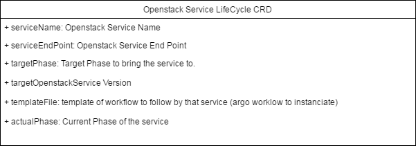

LifeCycle Modelisation¶
Design¶
Oslc CRD¶
The CRD Oslc definition is available here:
- Its Spec which is update through kubectl: Spec
- Its Status which is updated by the operator and accessible through kubectl describe: Status
- Its definition made out of the two above components: Definition
- The yaml version of the CRD: Yaml
Oslc Controller¶
TBD
SubResources¶
The current PhaseCRD are currently standalone CRDs. This provides control to the phase-controller on those objects. At one point we will have to weight if we need to keep those CRDs or simply consider the Phase as nodes of an Argo Workflow.